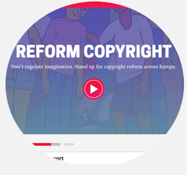

CREATIVE
As Editorial Lead at Mozilla, I write words for speeches, products, publications and websites. I also handle press relations.
Here's a sampling of some recent work:
MOZILLA'S COPYRIGHT REFORM CAMPAIGN
In 2016, Mozilla launched a campaign to reform oppressive copyright law in the European Union -- and I served as a creative and communications lead. I wrote advocacy copy and slogans, opinion pieces, and scripts (like this one). And I led a PR push that garnered 117 stories (like this one) in 21 countries.
MOZILLA FESTIVAL SPEAKER SERIES
I was chief architect and curator of the Mozilla Festival's first-ever speaker series, which brought 12 marquee-name speakers to London for TED-style talks. The theme: Internet Health. The speakers: Zeynep Tufekci, Katherine Maher, Chris Soghoian, and nine other luminaries. View photos of the speaker series here, and watch the talks here.
MOZILLA'S ENCRYPTION CAMPAIGN

I led communications for Mozilla's Encrypt campaign, a public education initiative that taught everyday internet users about encryption's importance. I authored campaign copy, custom content and assisted with script writing. The campaign reached millions of users and garnered coverage on NPR and CNN.
OPEN WEB FELLOWS
Mozilla's Open Web Fellowship places talented technologists at organizations like Amnesty International and the ACLU. Its mission: Help the world's leading NGOs keep the web open and free. I authored our Year 1 publication, an in-depth exploration of the program's success and impact. Read the report.
MOZILLA THIMBLE

I led communications around the re-launch of Thimble, Mozilla's free code editor and teaching tool. The re-launch featured a suite of clever copywriting ("Coding, Decoded") and earned placements in TechCrunch and several other influential publications.